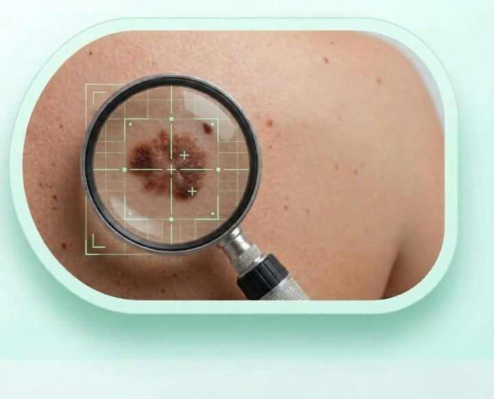

AI-Powered Dermatology
Instant AI screening for 8 skin lesion types using deep learning. Upload a dermatoscopic image and receive a detailed risk assessment in seconds.

Differentiates between Melanoma, BCC, SCC, Actinic Keratosis, Benign Keratosis, Dermatofibroma, Vascular Lesion, and Melanocytic Nevus.
Goes beyond image analysis by incorporating patient age, sex, and anatomical site — the same factors dermatologists consider in clinical practice.
Provides per-class probability distributions and malignancy risk scores. Uncertain cases are flagged for professional review rather than giving false confidence.
AI Screening
Our EfficientNet-B4 model analyzes dermatoscopic images at 456×456 resolution and provides a differential diagnosis across 8 categories.
Age and sex help the model make a more accurate assessment.
Use a well-lit, close-up photo of the affected skin area.
Receive classification, confidence scores, and recommended next steps.
This is a screening tool only. It does not replace professional medical advice. Always consult a dermatologist for proper diagnosis.
Fill in your details and upload a photo
Understanding the Risk
The deadliest form of skin cancer. Develops in melanocytes and can spread rapidly to other organs. Survival rate drops from 99% (early stage) to 30% (late stage).
High RiskThe most common skin cancer. Typically grows slowly and rarely metastasizes, but can cause significant local tissue damage if untreated.
Moderate RiskSecond most common skin cancer. Can metastasize to lymph nodes and distant organs. Often found on sun-exposed areas like head, neck, and hands.
High RiskPre-cancerous rough patches caused by UV damage. Approximately 10% may progress to squamous cell carcinoma if left untreated.
Pre-cancerous